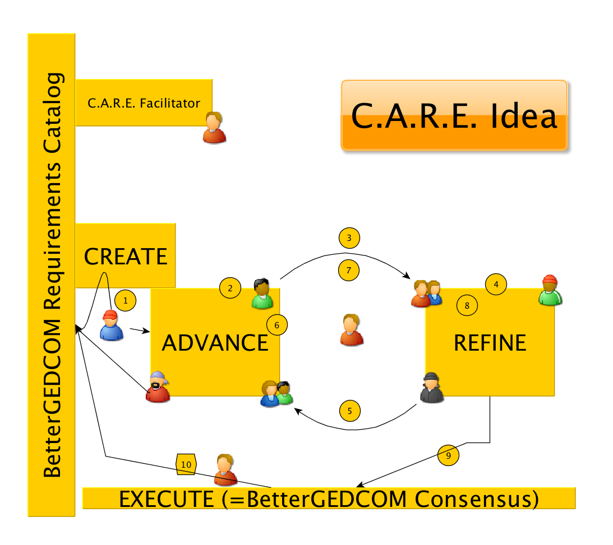

Background
“Innovate with C.A.R.E” is skills/roles and task approach to teamwork project management.
http://www.inscapebaltic.lv/en/inimeste_arendamine/analyses/innovate_with_car/
http://www.communicateinstitute.com/innovatewithcare.shtml
C.A.R.E. facilitates ideas through to successful execution using a system of handoffs and a division of roles. All team members take ownership and become stakeholders in the outcome.
The
CREATOR develops and promotes an idea. He/she documents the big picture. He/she then hands off the concept to the ADVANCERS, who take ownership.
The
ADVANCERS develop the idea further and document all to an executable form. The thoughts may come down directly, or may weave an flow a bit--it's their job to make an executable plan. Sometimes ADVANCERS work plans in stages (perhaps from big picture to tiny details), sometimes not. They know their work plan will be turned over to the REFINERS.
It’s the job of the
REFINERS to challenge the plan and document issues that could prevent successful implementation (a bit like a gatekeeper). The plan, with the REFINERS documented issues, is handed back are handed off to the CREATOR and/or ADVANCERS. (The flow between Advancers and Refiners can be one or many.) If the REFINERS find no issues, the plan is ready to go. The REFINER hands-off the final plan (from the ADVANCERS) to the EXECUTORS.
The
EXECUTORS implemented the plan in accordance with the terms set out by the ADVANCERS.
The
FACILITATOR is an overseer—he/she makes sure tasks are handed off in good order so the idea moves forward; keeps the effort from getting bogged down in bureaucracy.

Practical thoughts and possible benefits:
C.A.R.E. fosters healthy conflict and expects success in an ordinary process. Who doesn’t like that? In another life, groups I worked with used this consistently on project teams where there was no voting (all the responsibility and none of the authority). Much like the BetterGEDCOM effort, we needed to deliver a top notch product with absolute confidence it would work as designed. Our group found this to be scalable for day to day purpose and mega new ideas--but it is simple. (Is it too simple?) In practices, we rarely used the formal terms, but the roles were always understood.
The process
forces conflict to its best use. Those advancing a project are given the latitude to develop the idea as they see best--they have the space to resolve conflicts between each other by taking the idea to a higher level. Those involved in refining the may not agree with each other all the time, either—but it’s not their job to agree—it’s their job to discover all the potential problems.
Shared ownership is a challenge for any idea based team effort, yet with each handoff, CARE sets out to accomplish just that.
This might be good way to foster more involvement on the Wiki and in BetterGEDCOM. Folks can participate in one phase or another of a project, as their talent permits. The team wants the very best personnel to be assigned to each phase.
Each handoff is accompanied by documentation—the process seems well suited to a wiki system.
Thoughts about customizing for BetterGEDCOM.
- I’d like to see Geir act as the facilitator for all proposals, including that he be permitted to assign that role, for any given project, to any other party as he sees fit.
- Allocate part of the Requirements Catalog for “Proposals.” The Creator links from the Requirements Catalog to their Proposal Page (and cross links to any appropriate wiki section)
- Part of that “Proposal” would show links to the different phases of the process.
- “Execute” for BetterGEDCOM = VOTE.
- It’s the value of the process/roles that we want to respect. There isn’t any need to advance/refine/vote in order to change a light bulb. Perhaps when Geir views an the articulated proposal as straight forward, he simply request … “are there any objections.” The proposal would remain on the wiki, with a comment that it was “advanced” directly to the requirements catalog. The discussion tab to that proposal page would remain open for others to comment as necessary (OR … comments could be redirected to a tab on the appropriate Requirements Catalog page.
What did I miss? Anyone wanna advance this one?
http://bettergedcom.wikispaces.com/Proposal+for+BetterGEDCOM+to+C.A.R.E
Thoughts about customizing for BetterGEDCOM.
1. I’d like to see Geir being the facilitator for all proposals, including that he assign that role for any given project to to any other party as he sees fit.
2. Assign part of the Requirements Catalog for “Proposals.” The Creator link from the Requirements Catalog to their Proposal Page (and cross link to any wiki section)
3. Part of that the “Proposal” would show links to the different phases of the process.
4. “Execute” for BetterGEDCOM = VOTE.
5. It’s the value of the process/roles that we want to respect. There isn’t any need to advance/refine/vote in order to change a light bulb. Perhaps when Geir views an the articulated proposal as straight forward, he simply request … “are there any objections.” The proposal would remain on the wiki, with a comment that it was “advanced” directly to the requirements catalog. The discussion tab to that proposal page would remain open for others to comment as necessary (OR … comments could be redirected to a tab on the appropriate Requirements Catalog page.